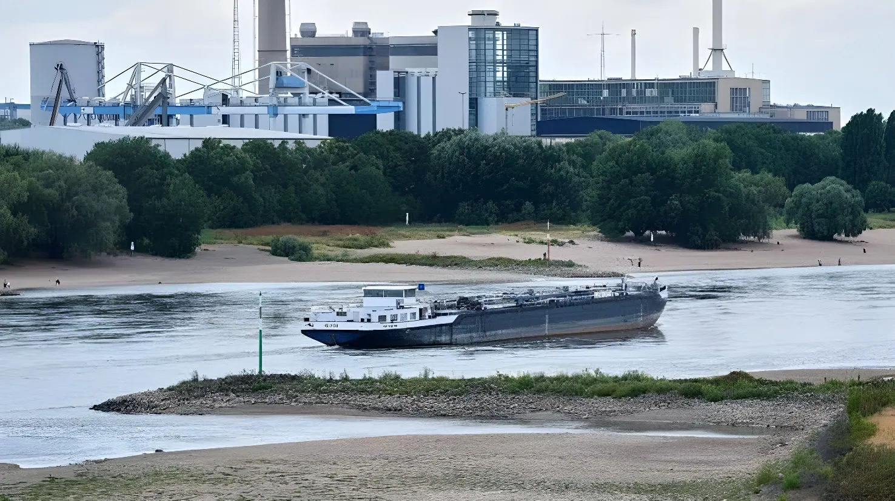

Depuis le début de l'été 2026, un déficit persistant de précipitations combiné à des vagues de chaleur exceptionnelles a fait chuter le niveau du Rhin à des seuils jamais observés depuis le début des relevés, en 1880, à la station de référence de Kaub. Colonne vertébrale du fret fluvial européen, le fleuve voit sa navigation se réduire à un filet d'eau, menaçant l'approvisionnement de la chimie, de la sidérurgie et de l'énergie allemandes, au moment où la première économie d'Europe tente une reprise déjà fragile.
Le Rhin n'est pas un cours d'eau comme les autres : il relie le port néerlandais de Rotterdam, débouché sur la mer du Nord, à Bâle en Suisse, en irriguant au passage trois des plus grands bassins industriels d'Allemagne — la sidérurgie de la Ruhr, la région Rhin-Main et l'immense complexe chimique de Ludwigshafen, berceau du groupe BASF. Charbon, produits pétroliers, minerai de fer, céréales, produits chimiques et conteneurs y transitent quotidiennement, pour un total d'environ 285 millions de tonnes par an, soit près de 80 % du trafic fluvial allemand.
La station hydrométrique de Kaub, en Rhénanie-Palatinat, entre Coblence et Mayence, sert de jauge de référence à toute la batellerie européenne : sous un certain seuil, les péniches doivent réduire drastiquement leur chargement, voire renoncer à certains tronçons du fleuve.
La baisse du niveau du fleuve a surpris par sa vitesse. Le 4 août 2026, le niveau relevé à Kaub est tombé à 21 centimètres, effaçant le précédent record de 25 centimètres qui datait d'octobre 2018. Le 10 août, il s'établissait à 17 centimètres, poussant la Fédération allemande de la navigation intérieure (BDB) à alerter sur un risque de fleuve « coupé en deux » si le seuil des 10 centimètres venait à être franchi. À la mi-août, il oscillait, selon les stations et les jours, entre 6 et 16 centimètres — un plancher jamais atteint depuis le début des relevés en 1880.
Deutsche Welle a fait état de débits record sur environ 85 % du cours du Rhin, les plus faibles depuis plus de trente ans. Cette situation touche également deux autres grands fleuves allemands, l'Elbe et le Danube, mais c'est sur le Rhin, cœur du système fluvial européen, que les conséquences économiques sont les plus lourdes.
Une vague de chaleur exceptionnelle accentue l'assèchement du lit du fleuve. Près de Leverkusen, d'anciennes épaves émergent de l'ancien confluent de la Wupper et du Rhin.
Le niveau à Kaub tombe à 21 cm, effaçant le record de 25 cm datant de 2018. Le ministre des Transports Steffen Bilger convoque une conférence de crise à Bonn avec industriels, armateurs, ports et logisticiens.
Le niveau atteint 17 cm. La BDB avertit que le Rhin pourrait se retrouver scindé en deux et ne plus être navigable de façon continue si le niveau passe sous 10 cm.
Le niveau chute encore, entre 6 et 16 cm selon les relevés — le plus bas jamais mesuré à cette station depuis 1880. Le chargement moyen des barges passe d'environ 1 500 à 400 tonnes.
Les surcharges d'étiage appliquées par les opérateurs de transport fluvial dépassent 1 000 euros par conteneur sur les points les plus tendus, comme Kaub ou Cologne.
Pour les groupes industriels dépendants du fleuve, les basses eaux ne sont plus une anecdote météorologique mais un problème économique de premier ordre. Chez BASF, à Ludwigshafen, le recours accru à des barges adaptées aux faibles tirants d'eau a permis, dans un premier temps, de maintenir l'essentiel des approvisionnements, avant que le groupe ne signale de possibles cas de force majeure ou des pénuries de produits. Le chimiste Covestro, dont plus de 30 % des produits fabriqués et près de 75 % des matières premières transitent par le Rhin, indique que les perturbations affectent déjà l'approvisionnement et la production de certains sites. Chez Lanxess, la situation est qualifiée de « très difficile », tandis qu'Evonik voit certaines activités de son complexe de Marl pénalisées par la baisse des volumes transportés.
Le groupe pétrochimique LyondellBasell a déclaré un cas de force majeure sur ses livraisons de butadiène depuis son site de Wesseling. Du côté de la sidérurgie, Thyssenkrupp Steel a dû adapter l'approvisionnement de son site de Duisbourg, remplacer sa flotte fluviale par des navires à plus faible tirant d'eau et réduire légèrement la production de ses hauts-fourneaux.
| Indicateur | Donnée vérifiée |
|---|---|
| Niveau à Kaub (10 août 2026) | 17 cm |
| Niveau à Kaub (mi-août 2026) | 6 à 16 cm selon les stations |
| Précédent record (2018) | 25 cm |
| Part du fret fluvial allemand via le Rhin | ~80 % |
| Tonnage annuel transporté | 285 millions de tonnes |
| Chargement moyen des barges (août 2026) | ~400 t, contre ~1 500 t habituellement |
| Pertes de BASF en 2018 (référence) | ~250 millions d'euros |
Face à l'urgence, l'opérateur ferroviaire DB Cargo a annoncé mobiliser jusqu'à 900 wagons supplémentaires pour absorber une partie du fret chimique et sidérurgique habituellement transporté par voie fluviale. Le ministre des Transports Steffen Bilger a évoqué la possibilité de suspendre temporairement l'interdiction de circulation des poids lourds les dimanches et jours fériés, afin de transférer davantage de fret vers la route. En Rhénanie-Palatinat, le ministre régional de l'Économie, Michael Ebling, a appelé le gouvernement fédéral à accélérer le projet d'approfondissement du chenal du Rhin moyen, jugeant cette voie d'eau stratégique pour l'économie du pays.
Pour l'économie allemande, déjà engagée dans une reprise poussive — la croissance 2026 est attendue autour de 0,5 % — cet épisode de basses eaux tombe à un moment particulièrement délicat. Plusieurs analyses évoquent un impact trimestriel pouvant atteindre 0,2 point de PIB si le gabarit du fleuve reste durablement sous les seuils opérationnels, un choc d'offre qui pourrait, comme en 2018, peser sur l'ensemble de l'année.
« L'évolution des niveaux d'eau n'annonce rien de bon. »
— Jens Schwanen, directeur général de la BDB (Fédération allemande de la navigation intérieure), août 2026Après 2018 et 2022, l'épisode de 2026 confirme que les basses eaux du Rhin ne relèvent plus de l'accident isolé mais d'un risque économique récurrent, appelé à se répéter à mesure que le dérèglement climatique intensifie les vagues de chaleur et les déficits de précipitation. Pour une Allemagne dont l'appareil industriel — chimie, sidérurgie, énergie — reste structurellement dépendant du transport fluvial, la question n'est plus seulement de gérer l'urgence estivale, mais d'investir durablement dans l'adaptation : approfondissement des chenaux, diversification vers le rail, flottes à faible tirant d'eau. Un chantier de long terme, alors que le Rhin, artère industrielle du pays, fonctionne déjà au ralenti.
Seit Beginn des Sommers 2026 hat ein anhaltendes Niederschlagsdefizit in Kombination mit außergewöhnlichen Hitzewellen den Pegel des Rheins an der Referenzstation Kaub auf Werte fallen lassen, wie sie seit Beginn der Aufzeichnungen im Jahr 1880 noch nie gemessen wurden. Als Rückgrat der europäischen Binnenschifffahrt schrumpft der Fluss auf ein Rinnsal und gefährdet die Versorgung der deutschen Chemie-, Stahl- und Energiewirtschaft — just in dem Moment, in dem die größte Volkswirtschaft Europas einen ohnehin fragilen Aufschwung versucht.
Der Rhein ist kein gewöhnlicher Fluss: Er verbindet den niederländischen Hafen Rotterdam, das Tor zur Nordsee, mit Basel in der Schweiz und durchquert dabei drei der größten Industriezentren Deutschlands — die Stahlindustrie im Ruhrgebiet, die Region Rhein-Main und den riesigen Chemiekomplex in Ludwigshafen, die Wiege des Konzerns BASF. Kohle, Erdölprodukte, Eisenerz, Getreide, Chemikalien und Container werden dort täglich transportiert — insgesamt rund 285 Millionen Tonnen pro Jahr, was fast 80 % des deutschen Binnenschiffsverkehrs entspricht.
Die Pegelmessstation in Kaub, in Rheinland-Pfalz zwischen Koblenz und Mainz, dient der gesamten europäischen Binnenschifffahrt als Referenzwert: Unterhalb eines bestimmten Pegels müssen Frachtkähne ihre Beladung drastisch reduzieren oder bestimmte Flussabschnitte ganz meiden.
Der Pegelrückgang überraschte durch seine Geschwindigkeit. Am 4. August 2026 fiel der in Kaub gemessene Pegel auf 21 Zentimeter und unterbot damit den bisherigen Rekord von 25 Zentimetern aus dem Oktober 2018. Am 10. August lag er bei 17 Zentimetern, was den Bundesverband der Deutschen Binnenschifffahrt (BDB) dazu veranlasste, vor der Gefahr eines „zweigeteilten" Rheins zu warnen, sollte die Marke von 10 Zentimetern unterschritten werden. Mitte August pendelte er, je nach Messstelle und Tag, zwischen 6 und 16 Zentimetern — ein Tiefstand, der seit Beginn der Aufzeichnungen 1880 nie erreicht wurde.
Die Deutsche Welle berichtete von Rekord-Niedrigwasser auf rund 85 % der Rheinstrecke, dem niedrigsten Stand seit über dreißig Jahren. Auch zwei weitere große deutsche Flüsse, Elbe und Donau, sind betroffen — doch am schwersten wiegen die wirtschaftlichen Folgen am Rhein, dem Herzstück des europäischen Binnenschifffahrtssystems.
Eine außergewöhnliche Hitzewelle verstärkt die Austrocknung des Flussbetts. Bei Leverkusen tauchen alte Schiffswracks am ehemaligen Zusammenfluss von Wupper und Rhein auf.
Der Pegel in Kaub fällt auf 21 cm und unterbietet den Rekord von 25 cm aus dem Jahr 2018. Verkehrsminister Steffen Bilger beruft eine Krisenkonferenz in Bonn mit Industrie, Reedern, Häfen und Logistikvertretern ein.
Der Pegel erreicht 17 cm. Der BDB warnt, der Rhein könnte zweigeteilt und nicht mehr durchgängig schiffbar sein, falls der Pegel unter 10 cm fällt.
Der Pegel sinkt weiter, je nach Messung auf 6 bis 16 cm — der niedrigste jemals an dieser Station gemessene Stand seit 1880. Die durchschnittliche Beladung der Frachtkähne sinkt von rund 1.500 auf 400 Tonnen.
Die von Binnenschifffahrtsunternehmen erhobenen Niedrigwasserzuschläge übersteigen an Engpässen wie Kaub oder Köln 1.000 Euro pro Container.
Für flussabhängige Industriekonzerne sind die Niedrigwasser längst keine meteorologische Randnotiz mehr, sondern ein wirtschaftliches Problem ersten Ranges. Bei BASF in Ludwigshafen konnte der verstärkte Einsatz von Kähnen mit geringerem Tiefgang die Versorgung zunächst weitgehend aufrechterhalten, bevor der Konzern mögliche Fälle höherer Gewalt oder Produktengpässe meldete. Der Spezialchemiekonzern Covestro, bei dem mehr als 30 % der hergestellten Produkte und rund 75 % der Rohstoffe über den Rhein transportiert werden, gibt an, dass die Störungen bereits Versorgung und Produktion einzelner Standorte beeinträchtigen. Bei Lanxess wird die Lage als „sehr schwierig" bezeichnet, während bei Evonik einzelne Aktivitäten am Chemiekomplex Marl unter den sinkenden Transportmengen leiden.
Der Petrochemiekonzern LyondellBasell erklärte höhere Gewalt bei seinen Butadien-Lieferungen ab seinem Standort Wesseling. In der Stahlindustrie musste Thyssenkrupp Steel die Rohstoffversorgung seines Standorts Duisburg anpassen, seine Flussflotte durch Schiffe mit geringerem Tiefgang ersetzen und die Produktion seiner Hochöfen leicht drosseln.
| Kennzahl | Verifizierter Wert |
|---|---|
| Pegel Kaub (10. August 2026) | 17 cm |
| Pegel Kaub (Mitte August 2026) | 6 bis 16 cm je nach Messstelle |
| Vorheriger Rekord (2018) | 25 cm |
| Anteil des dt. Binnenschiffsverkehrs via Rhein | ~80 % |
| Jährlich transportierte Gütermenge | 285 Millionen Tonnen |
| Durchschnittsbeladung Kähne (August 2026) | ~400 t statt ~1.500 t üblich |
| BASF-Verluste 2018 (Referenzwert) | ~250 Millionen Euro |
Angesichts der Dringlichkeit kündigte der Bahnlogistiker DB Cargo an, bis zu 900 zusätzliche Waggons zu mobilisieren, um einen Teil der üblicherweise per Binnenschiff transportierten Chemie- und Stahlfracht aufzufangen. Verkehrsminister Steffen Bilger brachte die Möglichkeit ins Spiel, das Sonntags- und Feiertagsfahrverbot für Lkw vorübergehend auszusetzen, um mehr Fracht auf die Straße zu verlagern. In Rheinland-Pfalz forderte Wirtschaftsminister Michael Ebling die Bundesregierung auf, das Projekt zur Vertiefung der Fahrrinne am Mittelrhein zu beschleunigen, da diese Wasserstraße für die Wirtschaft des Landes strategisch sei.
Für die deutsche Wirtschaft, die sich ohnehin in einer schleppenden Erholung befindet — das Wachstum 2026 wird bei rund 0,5 % erwartet —, kommt diese Niedrigwasser-Episode zu einem besonders ungünstigen Zeitpunkt. Mehrere Analysen sprechen von einem möglichen Quartalseffekt von bis zu 0,2 Prozentpunkten beim BIP, sollte das Flussprofil dauerhaft unter den betrieblichen Schwellenwerten bleiben — ein Angebotsschock, der wie schon 2018 das gesamte Jahr belasten könnte.
„Die Entwicklung der Wasserstände verheißt nichts Gutes."
— Jens Schwanen, Geschäftsführer des BDB (Bundesverband der Deutschen Binnenschifffahrt), August 2026Nach 2018 und 2022 bestätigt die Episode von 2026, dass das Niedrigwasser am Rhein kein isolierter Zwischenfall mehr ist, sondern ein wiederkehrendes wirtschaftliches Risiko, das sich mit fortschreitendem Klimawandel und häufigeren Hitzewellen sowie Niederschlagsdefiziten weiter verschärfen dürfte. Für ein Deutschland, dessen Industrieapparat — Chemie, Stahl, Energie — strukturell von der Binnenschifffahrt abhängt, geht es längst nicht mehr nur darum, die sommerliche Notlage zu bewältigen, sondern langfristig in Anpassung zu investieren: Vertiefung der Fahrrinnen, Diversifizierung hin zur Schiene, Flotten mit geringerem Tiefgang. Eine langfristige Baustelle — während der Rhein, die industrielle Lebensader des Landes, bereits im Schongang läuft.